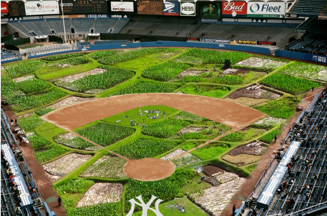

Yankee & Rockefeller Farm
In an effort to "use the unused" and promote City Harvest, we have turned two of the most iconic New York attractions into a grid of sustainable working crops.

This will take place during the off season.